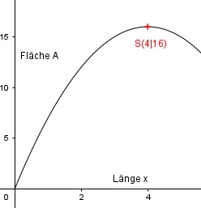

Aufgabe 118 Wie groß ist der maximale Flächeninhalt A eines Rechtecks mit einem Umfang von 16 cm? Die eine Rechteckseite sei a. Die andere sei b. U = 2a + 2b |-2a 2b = U – 2a |:2 U – 2a 16 – 2a b = --------- = ---------- = 8 - a 2 2 A(a) = a * (8 - a) A(a) = -a2 + 8a Dies ist die Funktionsgleichung einer nach unten geöffneten Normalparabel, deren höchster Punkt der Scheitelpunkt ist. A(a) = -a2 + 8a |:(-1) -A(a) = a² - 8a Quadratische Ergänzung: -A(a) = a² - 8a + 16 - 16 mit a² - 8a + 16 = (a - 4)2 -A(a) = (a - 4)2 - 16 |*(-1) A(a) = -(a - 4)2 + 16 Scheitelpunkt abgelesen: S(4|16) Die Scheitelpunktkoordinaten bedeuten: Die Rechteckseite a ist 4 cm, der Flächeninhalt A ist 16 cm². b = 8 – a = 8 cm – 4 cm = 4 cm A = a * b = 4 cm * 4 cm = 16 cm² 